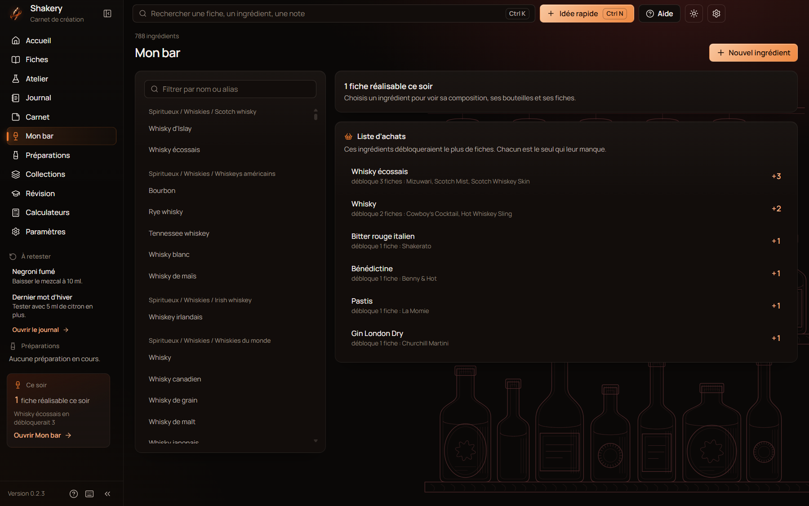

Shakery · refonte ergonomique · planche 05 sur 1024 novembre 2026
Mon bar, la possession en un clic
Avant

Ce qui change
- Une phrase d’aide sous le titre dit qu’il suffit de cocher les bouteilles que tu as chez toi, ce que Shakery en tire et qu’un clic sur un nom ouvre le détail, parce que l’écran actuel ne dit nulle part comment déclarer ce que tu possèdes.
- Chaque ligne porte la case à cocher de l’appli sous une colonne « Je l’ai », ce qui permet de déclarer une bouteille sans ouvrir sa fiche ingrédient.
- Un sélecteur Tout, Je l’ai, Il me manque, avec ses nombres (788, 18, 770), est posé au-dessus de la liste à côté du filtre, pour passer en un clic du catalogue à ton inventaire réel.
- Le chemin « Spiritueux / Whiskies / Scotch whisky » est remplacé par la famille en petites capitales cuivre avec un filet, suivie d’un décompte « 6 chez toi sur 214 », et par un sous-groupe discret (Gins, Whiskies, Vermouths) placé dans une colonne grise à gauche.
- La liste prend la largeur principale, en lignes séparées par des filets, et chaque ligne indique le nombre de fiches qui utilisent l’ingrédient en chiffres tabulaires.
- Les bouteilles cochées ressortent par leur nom en blanc et leur case cuivre, les autres restent en gris, ce qui rend l’inventaire lisible sans couleur supplémentaire.
- La colonne de droite perd ses cartes et n’est plus séparée que par un filet vertical, avec « Ce soir » (le nombre 23 en grand et en cuivre, cinq fiches et un lien vers les autres) puis la liste d’achats en lignes à filets.
- Seul « Nouvel ingrédient » reste en bouton plein cuivre, et l’action « Voir les 23 fiches » est un simple lien texte.
- Le motif de bouteilles du fond passe de 36 % à 9 % d’opacité sur cet écran, car sans cartes il traversait le texte de la liste.
À trancher
- Où doit s’ouvrir le détail d’un ingrédient (composition, bouteilles, fiches) maintenant que la colonne de droite sert à « Ce soir » et à la liste d’achats, à la place de cette colonne, dans un panneau qui glisse par-dessus ou sur une page à part ?
- Faut-il compter les produits frais et courants (citron, sucre, eau gazeuse) comme toujours disponibles, ou les cocher comme les bouteilles ?
- Le libellé « Il me manque » te convient-il pour 770 ingrédients, ou préfères-tu « Je ne l’ai pas » ?
- Cocher une case doit-il rester un simple oui ou non par ingrédient, ou proposer aussi de choisir la bouteille précise que tu as ?
- Veux-tu que le motif du fond soit atténué de la même façon sur tous les écrans qui perdent leurs cartes, ou seulement sur Mon bar et Préparations ?